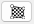
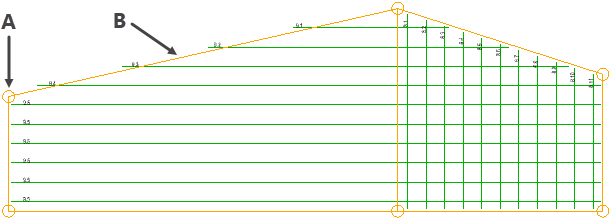
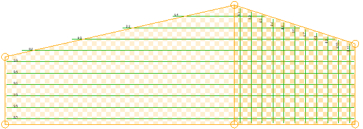
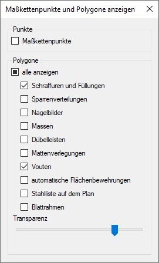
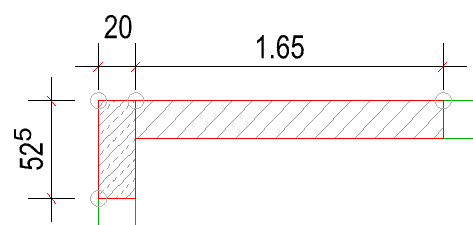
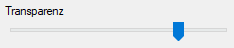

(untere Menüleiste)
Die Polygondarstellung ist eine unterstützende Funktion, die Ihnen die Selektion und Bearbeitung von Elementgruppen erleichtert.
Verwenden Sie diese Funktion, um bei der Bearbeitung (Verschieben, Kopieren, Dehnen usw.) besser zu erkennen, welche Zeichenelemente in der Selektion enthalten und im Bearbeitungsschritt geändert werden. So lassen sich inneinander geschachtelte oder sich überlappende ISBCAD Gruppen präziser selektieren.
Beispiel: Polygontyp Vouten
In ISBCAD werden bei bestimmten Funktionen Flächenbereiche abgesteckt, die für die Ausführung einer Funktion notwendig sind. Beispielsweise muss für eine Voutenverlegung zunächst ein Umriss definiert werden, in dem die Voute gezeichnet werden soll. ISBCAD speichert diese Umrisse als Polygone ab, die aus Polygonpunkten und Verbindungslinien bestehen, und mit dieser Funktion eingeblendet werden können.
 |
 |
A. Polygonpunkt; B. Verbindungslinie |
Polygondarstellung mit Musterfüllung. Flächenüberlappung ist sichtbar. |
·Die Polygonpunkte der Elemente werden mit dem Cursor gefangen und können als Referenzpunkte bei der Konstruktion angeklickt werden. Stellen Sie dabei sicher, dass die Elemente oder ihre Folie nicht gesperrt ist oder sie im Elemente-Filter von der Bearbeitung ausgeschlossen sind.
·Auf der Zeichnung eingeblendete Polygone werden nicht gedruckt.
·Die Einstellungen im Dialog Maßkettenpunkte und Polygone anzeigen werden dauerhaft gespeichert und in neue Zeichnungen übernommen.
Optionen im Dialog "Maßkettenpunkte und Polygone anzeigen"
 |
Punkte
Maßkettenpunkte
Setzen Sie einen Haken  in die Checkbox, um Maßkettenpunkte an der Geometrie einzublenden. Entfernen Sie den Haken
in die Checkbox, um Maßkettenpunkte an der Geometrie einzublenden. Entfernen Sie den Haken  , um die Punkte auszublenden.
, um die Punkte auszublenden.
 |
Polygone
alle anzeigen
Um alle Polygone ein- bzw. auszublenden, klicken Sie in die alle anzeigen-Checkbox. Wenn mindestens ein Polygontyp ein- oder ausgeblendet ist, wird dieses Symbol  angezeigt.
angezeigt.
Gespeicherte Polygone (Liste)
Setzen Sie einen Haken in die Checkbox, um die Polygone in der Zeichnung anzuzeigen. Entfernen Sie den Haken , um Polygone auszublenden.
Die folgenden Polygontypen können ein- oder ausgeblendet werden:
·Schraffuren und Füllungen - Dargestellt werden die Schraffur- und Füllungspolygone. ·Sparrenverteilungen - Dargestellt werden die Polygone der Sparrenverteilungen. ·Nagelbilder - Dargestellt werden die Polygone der Nagelbilder. ·Massen - Dargestellt werden die Polygone der Massenermittlung. ·Dübelleisten - Dargestellt werden die Polygone der Funktion [Bautl]: Stütze Rechteck, Stütze Kreis, Wandende und Wandecke. Bei der Kreisstütze werden zusätzlich zum Kreiselement die freien Kanten dargestellt. ·Mattenverlegungen - Dargestellt werden die Polygone von Verlegungen im Rechteck [VerRec] und Verlegungen im Polygon [VerPol]. ·Vouten - Dargestellt werden die Polygone von Voutenverlegungen. ·automatische Flächenbewehrungen - Dargestellt werden die Polygone der automatischen Bewehrung [AutBew], automatischen Bewehrung mit Bewehrungsteppichen [BAMTEC] und der Flächenbewehrung [FläBew]. ·Stahlliste auf dem Plan - Dargestellt werden die Diagonalpunkte der Stahlliste. Die Verbindungslinien werden immer horizontal und vertikal bezogen auf einen Systemwinkel von 0º gezeichnet. ·Blattrahmen - Dargestellt werden die Polygone des Druck- und Freibereichs. Diese Bereiche werden mit der Funktion [RaEinf] definiert. |
Transparenz (Musterfüllung)
Um Flächen oder auch eine Überlappung von Flächen besser zu erkennen, können geschlossene Polygone mit einem Schachbrettmuster gefüllt werden. Sie können die Transparenz des Musters einstellen, indem Sie den Schieberegler mit gedrückter Maustaste bewegen.
 |
·0 % (links) = vollständig deckend ·ca. 50 % (mittig) = halb transparent ·100 % (rechts) = keine Füllung |
·Die Musterfarbe entspricht der eingestellten Farbe für die Darstellung der Polygone.
·Bei Füllungen, die mit [Konst 1 | Schraff] erstellt wurden, werden lediglich die Polygonpunkte dargestellt.
Siehe auch:
·Größe der Polygonpunkte einstellen (Systemdaten)
·Größe der Maßkettenpunkte einstellen (Systemdaten)
·Farbeinstellung für Polygone ändern (Systemdaten)
·Farbeinstellung für Maßkettenpunkte ändern (Systemdaten)
·Auswahlfunktionen (Selektion)